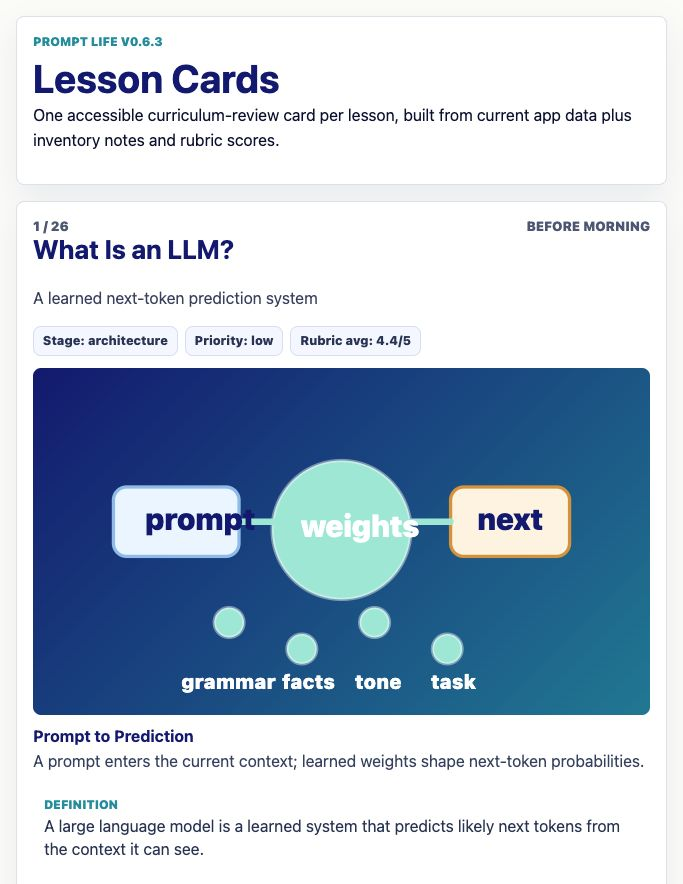
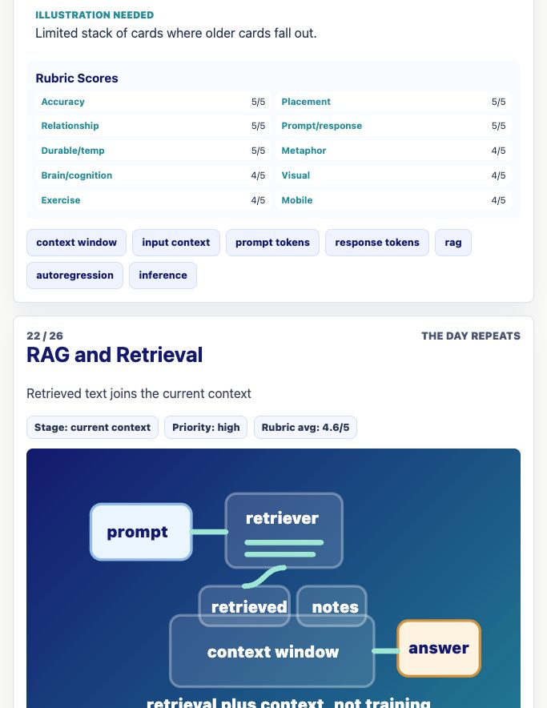
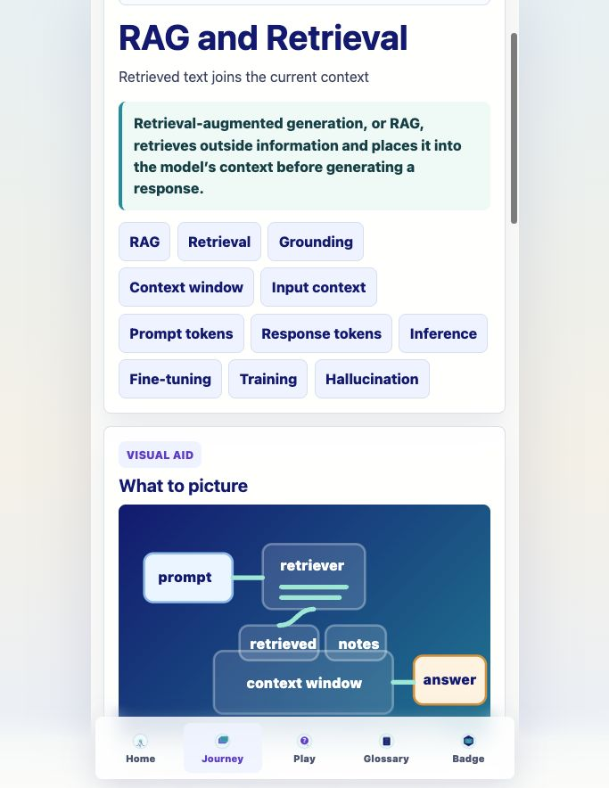
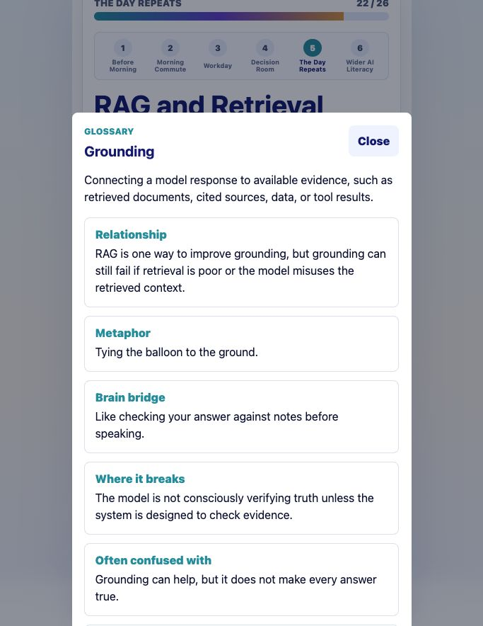

Prompt Life v0.6.3
Content Inventory and RAG Addendum Report
This pass completed the curriculum inventory artifacts, added RAG and Retrieval as a dedicated Journey card, added Grounding to the glossary, upgraded the lesson-card review route, exported the review PDF, and verified the app builds.
Journey count
26 lessons inventoried. RAG and Retrieval is lesson 22, immediately after Context Window.
PDF artifacts
docs/content-inventory/prompt-life-lesson-cards-v0-6.pdf and this report PDF. The review deck has 27 PDF page objects: one cover plus 26 lessons.
Verification
npm run typecheck, npm run build, and npm run export:lesson-cards passed.
Deploy target
Main branch update prepared for GitHub Pages phone testing.
Files Changed
src/data/content.ts,src/data/exercises.ts,src/data/contentReview.jssrc/main.tsx,src/components/VisualAids.tsx,src/styles/global.cssscripts/export-lesson-pdf.mjs,scripts/generate-content-inventory.mjs,package.json,README.mddocs/content-inventory/*,docs/REVIEW_NOTES.md, anddocs/screenshots/v0-6-3-*.png
What Is Done
- Generated complete current-content inventory, quality rubric, lesson matrix JSON, gaps, architecture proposal, visual inventory, misconception map, rewrite draft, UI copy cleanup list, and review instructions.
- Added RAG and Retrieval / Open-Book AI as a Journey card with prompt/response and durable/temporary distinctions.
- Added Grounding glossary content with metaphor, Brain Bridge, and limitation.
- Enhanced
/review/lesson-cardswith inventory fields and rubric scores. - Exported the inventory lesson-card PDF with one review card per lesson.
How To Run Locally
npm installnpm run dev- Open
http://localhost:5173/ - For the review route, open
http://localhost:5173/review/lesson-cards
Next Three v0.2 Improvements
- Rewrite the highest-priority lessons in app data: Vectors, Tensors, Attention, MLP, Hidden States, Context Window, RAG, and Risk vs Myth.
- Add a shared dog/cat example path across tokenization, attention, decoding, autoregression, context, and RAG.
- Add automated route and mobile smoke tests for lesson count, RAG placement, PDF export, bottom-nav clipping, and glossary drawer fields.



